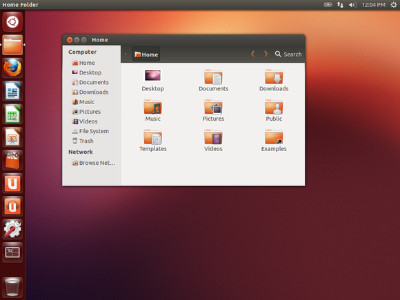

Start Speaker View with S key.
A Gentile Introduction to Linux
Armenian Engineers and Scientists of America
Created by Armen Babakanian / Linkedin Profile
Overview
- What is Linux?
- Why it exist?
- Where it's used?
- How can you use it?
Part 1
What is Linux?
It's an Open-Source Operating System
It's an Operating System (OS) like Windows and Mac
But it's Open-Source so you can get the code, modify it and install it
Which also means, you can get it for free
This is it's logo
And you can get from kernel.org
And this is how it looks like

(Not very attractive)
You might want to get a version of Linux that looks like this

But the default Linux doesn't come with any of that
There are ready made packages available that are user-friendly to download.
These packages are called distributions
Here are the most popular Linux distributions:
Ubuntu
The most downloaded distribution, and it's Debian based
CentOS
The second most downloaded distribution, and it's Redhat based

Fedora
The 3rd most downloaded distribution, and it's also Redhat based

Interested in trying it out?
Demo
- Download VMPlayer and install it
- Download one of the distributions mentioned above
- Install Linux on the virtual machine
- Start Linux
Part 2
Why does it exist?
It started in 1965 at AT&T Bell Labs

Ken Thompson and Dennis Ritchie created an operating system called Unix, written in C
It was an awesome operating system, and very expensive too
In 1983 Richard Stallman started the GNU Project

His goal was to create a free UNIX-like operating system, so he started creating tools necessary to create an operating system, such as the GNU C Compiler, Assemble, Linker.
He finally created the GNU Hurd operating system, but it didn't get pick up by the masses.
In 1991 Linux was created
In 1987 existed a simple operating existed named MINIX, meant to be used in universities and research. Minix license didn't allow its code to be modified or be reused.
A Finish Student named Linus Torvalds started creating a Minix clone, and he used the GNU tools to create it. It started as a hobby project, and he released the source code to the public with the intend of making it better
Part 3
Where it's used?
Embedded devices
Servers
Production pipelines
Part 4
How can you use it?
Hobby Electronic Projects
Website Development and Deployment
Fragments
Hit the next arrow...
... to step through ...
... a fragmented slide.
Fragment Styles
There's different types of fragments, like:
grow
shrink
fade-out
fade-up (also down, left and right!)
current-visible
Highlight red blue green
Export to PDF
Presentations can be exported to PDF, here's an example:
Take a Moment
Press B or . on your keyboard to pause the presentation. This is helpful when you're on stage and want to take distracting slides off the screen.
Much more
- Right-to-left support
- Extensive JavaScript API
- Auto-progression
- Parallax backgrounds
- Custom keyboard bindings